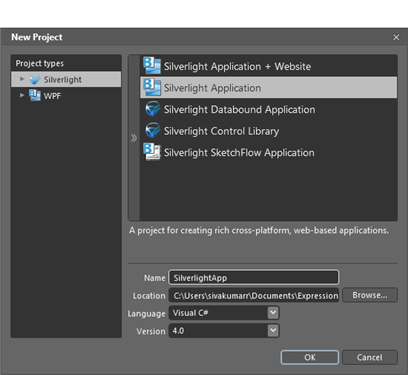

Steps to create MaskedTextBox in application by using Blend are as follows:
1. Open Blend, On the File Menu click New Project. This opens the New Project dialog box.

Figure 178: Creating MaskedTextBox by using Blend
2. In the Project type’s panel, select Silverlight application and then click OK.

Figure 179: select Silverlight application
3. Add the following Reference with the sample project.
· Syncfusion.Shared.Silverlight.dll
4. On the Window menu, select Assets. This opens the Assets Library dialog box.
5. In Search box, type MaskedTextBox. This displays the search results.
6. Drag the MaskedTextBox control to Design View. You can now edit the properties of MaskedTextBox in properties window.

Figure 180: Drag the MaskedTextBox control to Design View
|
XAML |
|
<syncfusion:MaskedTextBox Height="23" HorizontalAlignment="Left" Margin="128,128,0,0" Name="maskedTextBox1" VerticalAlignment="Top" Width="120" />
|

Figure 181: MaskedTextBox
See Also
Creating MaskedTextBox using XAML
Creating MaskedTextBox using C#